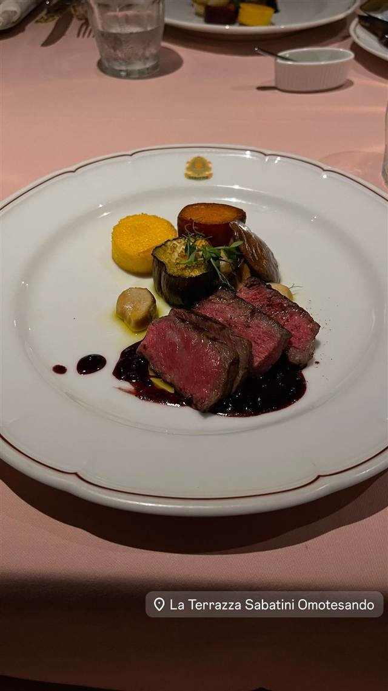
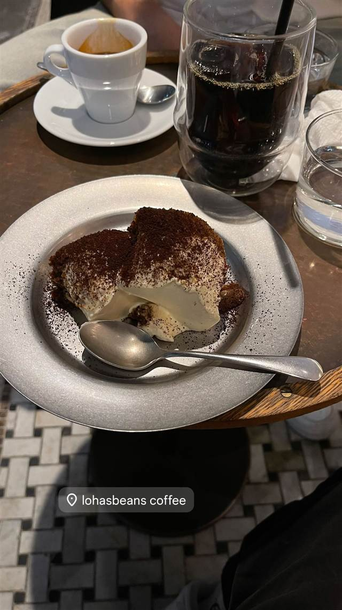
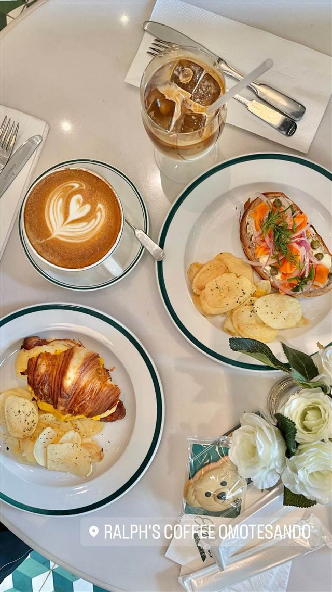

La Terrazza SABATINI Omotesando（ラ テラッツァ サバティーニ）
1958年ローマ創業、イタリア政府公認リストランテ第1号の系列
La Terrazza Sabatini Omotesando
1958年にローマで創業した老舗イタリアン「サバティーニ」の日本店を母体とし、日本のサバティーニはイタリア政府公認の「リストランテ」の称号を得た国内第1号として知られる。2024年に表参道の青山ビルにオープンしたこの店は、グリーンのテラス席や700種を超えるワインを揃え、伝統の味をカジュアルに楽しめるトラットリアとして展開している。
TRIVIA
豆知識
- 本家はローマで1958年に創業した老舗「サバティーニ」
- 日本のサバティーニはイタリア政府公認「リストランテ」の称号を得た日本第1号として知られる
REVIEWS
世間の評判
3.40食べログ
開放感あるテラス席と薄めのピザ
- 表参道とは思えない開放感あるテラス席の雰囲気を評価する声が多い
- サクサクの薄いピザ生地とティラミスの味わいを評価する声が多い
- 料理の塩気の強さや価格に対する量の少なさを指摘する声も見られる
食べログ 口コミ210件
| 創業 | 表参道店は2024年開業。本家サバティーニは1958年ローマ創業、日本上陸は1981年 |
|---|---|
| 系譜 | 1958年ローマ創業の老舗イタリアン「サバティーニ」の日本店の系列 |
| 看板 | ステーキなど肉料理を中心としたイタリアンコース |
| 掲載・評価 | 日本のサバティーニはイタリア政府公認「リストランテ」の称号を得た日本第1号 |
| どこから | 都心 |
| 営業時間 | 月〜日 11:30-15:30、17:30-22:30 |
| 予算 | 昼 ¥4,000～¥4,999 夜 ¥6,000～¥7,999 |
| 予約 | 予約可 |
| 場所 | 表参道 東京都港区北青山3-11-7 AOビル2F |
| メモ | 青山ビル2階にグリーンのテラス席、個室あり。ワインは700種以上 |
食べたもの：ステーキ
NEARBY
近い店・同じ系統の店
-
 タイ 表参道
表参道バンブー
1977年創業、日本初のサンドイッチ専門店として始まった洋館
夜 ¥5,000～¥5,999
タイ 表参道
表参道バンブー
1977年創業、日本初のサンドイッチ専門店として始まった洋館
夜 ¥5,000～¥5,999
-
 カフェ 表参道
カフェラントマン 青山店（CAFE LANDTMANN）
ウィーン本店と同じレシピで作る本格ザッハトルテ
昼 ¥1,000～¥1,999 夜 ¥3,000～¥3,999
カフェ 表参道
カフェラントマン 青山店（CAFE LANDTMANN）
ウィーン本店と同じレシピで作る本格ザッハトルテ
昼 ¥1,000～¥1,999 夜 ¥3,000～¥3,999
-
 ドリンク 表参道
CHAVATY（チャバティ）
スリランカの茶園で選んだウバ茶のティーソフトクリーム
昼 ～¥999 夜 ～¥999
ドリンク 表参道
CHAVATY（チャバティ）
スリランカの茶園で選んだウバ茶のティーソフトクリーム
昼 ～¥999 夜 ～¥999
-
 カフェ 表参道駅
i2 cafe (アイツーカフェ)
フルーツサンド店の姉妹店が出す、オーブン焼きのダッチベイビー
昼 ¥2,000～¥2,999 夜 ¥2,000～¥2,999
カフェ 表参道駅
i2 cafe (アイツーカフェ)
フルーツサンド店の姉妹店が出す、オーブン焼きのダッチベイビー
昼 ¥2,000～¥2,999 夜 ¥2,000～¥2,999
-

コーヒー 表参道 lohasbeans coffee（旧店名 Lounge1908 cafe） コロンビア産スペシャルティコーヒー専門商社のカフェ、数量限定ティラミス 昼 ¥2,000～¥2,999 夜 ¥2,000～¥2,999 -

コーヒー 明治神宮前駅・表参道駅 Ralph's Coffee Omotesando NYの人気店「ラ・コロンブ」特別ブレンドのカフェラテ